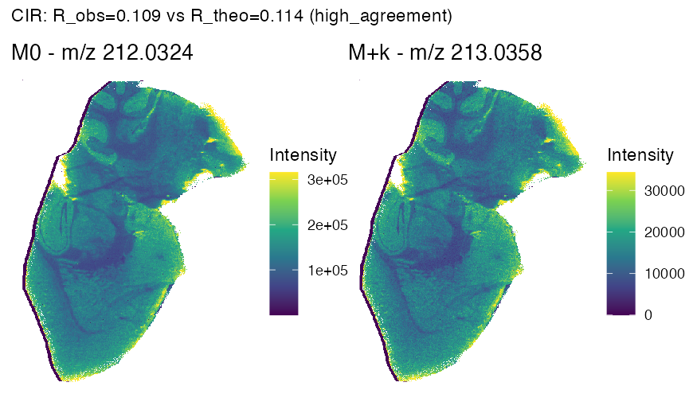
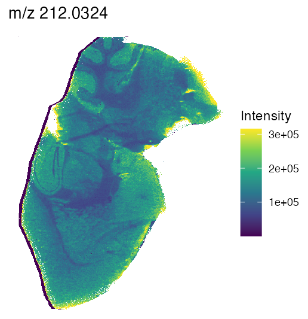
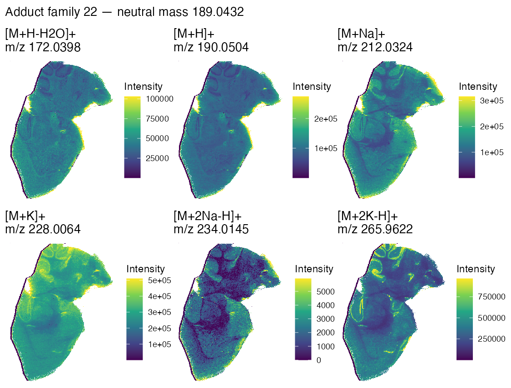
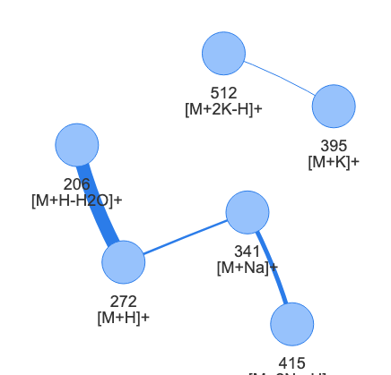

Overview
PeakGuideR has been developed to help interpret complex MALDI-MSI peak datasets, where many detected m/z features may correspond to isotopes, adducst, matrix-related signals or alternative ion forms of the same underlying molecule.
IThe main idea of the workflos is to combine several proves of evidence that are often checked separately (see what the peaks are telling us):
- isotope morphology;
- carbon isotope-ratio support;
- elemental isotope-pattern support;
- adduct-family grouping;
- neutral-mass inference;
- database candidate matching and adduct database validation.
The output should therefore be read as annotation support rather than as final compound identification. In practice, the package is intended to help prioritise which peaks and candidate annotations are worth inspecting or validating further.
Input data
This vignette shows the typical workflow starting from an already
processed peak matrix. The code chunks are not evaluated during package
checks, so pkm and msi_peaks should be
replaced by the user’s own objects.
The workflow can be run from 2 types of input:
- a PeakGuideR peak matrix object or
- a Cardinal MSI object that can be converted using
cardinal_to_peakmatrix().
For the peak-matrix route, the object should contain at least:
-
mass: m/z values of detected features; -
intensity: pixel-by-feature intensity matrix; -
image_id: only needed when analysing more than one image/run at once (multi_image = TRUEinrun_peakguider_workflow()) - a per-pixel label saying which image each pixel belongs too. If it’s not already present, it’s derived automatically (seederive_image_id_from_pkm()); see “General control” under “Workflow parameters” bellow for the full explanation ofmulti_image.
For example:
Load the example peak matrix:
library(PeakGuideR)
data("example_pkm", package = "PeakGuideR")
pkm <- example_pkm
str(pkm)Running the workflow
For a standard analysis, the workflow can be run with only the peak matrix, the ionisation mode and, optionally, the MALDI matrix:.
library(PeakGuideR)
res <- run_peakguider_workflow(
pkm = example_pkm,
ion_mode = "pos", #or "neg" for negative ionization
matrix = "HCCA",#or NULL if it is not HCCA (until the moment, only HCCA matrix has been included in the library)
quiet=TRUE)Use ion_mode = "neg" for negative-ion mode data. The
matrix argument is used only for matrix-specific
standard-adduct support. Currently, PeakGuideR includes standard-adduct
support for HCCA+DEA (ionic matrix); use matrix = NULL when
this evidence layer should not be used (recommended if you are using
another matrix).
If the data are stored as a Cardinal MSI object, the same workflow
can be called using cardinal_object:
res <- run_peakguider_workflow(
pkm = msi_peaks,
ion_mode = "pos",
matrix = "HCCA"
)Internally, Cardinal objects are converted to peak-matrix format
using cardinal_to_peakmatrix().
The returned object is a list with class
peakguider_workflow:
The workflow stores both intermediate evidence tables and final summary tables:
-
morph_results: candidate isotope relationships supported by spatial morphology; -
cir_results: C13 isotope-ratio evidence for candidate isotope pairs; -
eips_results: elemental isotope-pattern evidence for non-carbon elements; -
adduct_edges: pairwise adduct relationships between features; -
adduct_families: groups of features compatible with the same inferred neutral mass; -
relation_table: a unified table collecting the feature-feature relationships; -
feature_summary: one row per detected m/z feature; -
neutral_mass_candidates: inferred neutral masses with database candidate matches (a per-neutral_mass_idsummary view); -
candidate_annotations: the full long-format candidate table, including single-adduct hypotheses and priority scoring (see below).
The evidence layers are built up in sequence, starting from isotope morphology and ending with adduct-family grouping, before the neutral-mass and candidate tables described later in this vignette are built. The next three sections cover the intermediate evidence tables in that order.
Workflow parameters
run_peakguider_workflow() exposes every tunable
parameter of the functions it calls internally, grouped below by the
stage they affect. Most analyses only need pkm,
ion_mode and matrix; the rest have defaults
chosen for high-resolution Orbitrap MALDI-MSI data and are only worth
revisiting for a specific reason, noted for each parameter below.
Input and ionisation mode
-
pkm: an rMSI2-style peak matrix, or a supported CardinalMSImagingExperiment, converted internally withcardinal_to_peakmatrix(). -
ion_mode:"pos"or"neg". Selects which half ofdefault_adducts()is used wheneveradductsis not supplied, and which ion-mode-specific EIPS formula-support step is run insideeips_score(). -
matrix: the MALDI matrix used for the acquisition. It is only checked against"HCCA"(case-insensitive); when it matches, standard-adduct support is enabled inbuild_candidate_annotations()/build_neutral_mass_candidates(). Usematrix = NULLfor any other matrix, since PeakGuideR currently ships a standard-adduct library only for HCCA+DEA - passing an unsupported matrix name has the same effect asNULL(standard-adduct support is simply not enabled), it is not an error.
Databases and adducts
-
adducts: an adduct definition table withname,modeandmasscolumns (net m/z shift). IfNULL,default_adducts(ion_mode)is used. Supply a custom table to add an adduct not in the default list, restrict detection to a subset of adducts, or work with an ion source where the default mass shifts do not apply. -
compound_db: the broad compound mass database used for neutral-mass candidate matching. IfNULL, the small example database bundled with the package is loaded; for real analyses, download the full database from Zenodo (see “Using full databases from Zenodo” below) and pass it here. -
standards_db: the standard-adduct library used whenmatrix = "HCCA". IfNULLand standard-adduct support is enabled, the bundled example library is loaded; as withcompound_db, real analyses should supply the full Zenodo library.
Isotope morphology detection
These parameters are forwarded to
iso_morphology_candidates() and control how candidate
isotope pairs are first detected, purely from mass difference and
spatial/intensity similarity, before any isotope-ratio validation.
-
morph_prefer_mode:"ppm"(default) or"dp"- whether candidate isotope partners are searched within a ppm mass window or a fixed index window around the expected isotope shift."ppm"is the natural choice for accurate-mass data;"dp"may be preferable for lower-resolution or unevenly mass-calibrated peak lists where a ppm window is not meaningful. -
morph_method:"pearson","cosine"or"spearman"- the spatial similarity metric between two features’ intensity profiles."pearson"is the default;"spearman"trades some sensitivity for robustness to outlier pixels, and"cosine"ignores the mean intensity level entirely. -
morph_transform:"none","log1p"or"zscore"- an optional transform applied to intensity profiles before computing the similarity metric."log1p"can help when a handful of very intense pixels would otherwise dominate the correlation. -
morph_tile_blend:"median","p25"or"pass_rate"- how per-tile morphology scores (computed when spatial tiling is active; seemulti_imagebelow) are summarised intotile_summary."pass_rate"(fraction of tiles above a threshold) is more conservative than the"median"default when a pattern should hold consistently across the whole image rather than only on average.
Several parameters of iso_morphology_candidates() itself
- tol_dp, tile_min_pixels,
tile_alpha, tile_threshold,
min_score_keep - are not exposed by
run_peakguider_workflow() and always use that function’s
own defaults; call iso_morphology_candidates() directly if
these need tuning.
Carbon isotope-ratio (CIR) and elemental isotope-pattern (EIPS) validation
-
iso_min_score: the minimumscore_finalfrommorph_resultsrequired for a candidate pair to be evaluated at all bycir_score()/eips_score()(passed as theirmin_score_finalargument). Raising it restricts CIR/EIPS validation to the most spatially convincing morphology candidates; lowering it lets weaker spatial matches still be checked against the expected isotope ratio, at the cost of evaluating more candidates that are likely to fail. -
cir_rel_tol: relative-error tolerance between the observed and theoretical carbon isotope ratio used bycir_score()to setis_valid_c13_raw/cir_score. A tighter tolerance is stricter about accepting a C13 M+1 candidate as genuine. -
eips_rel_tol: the same kind of tolerance foreips_score()’s N/O/S/Cl/Br ratio matching. -
ratio_method:"sum","mean"or"median"- how the per-pixel isotope/monoisotopic intensity ratio is aggregated into a single observed ratio, shared bycir_score()andeips_score()."sum"(aggregating intensities before dividing) is recommended for MSI isotope-ratio estimation and is the default;"mean"/"median"aggregate the per-pixel ratios directly instead, which can behave differently when many pixels have low or zero intensity.
Adduct detection
These parameters are forwarded to adduct_candidates()
(pairwise adduct edges) and, where noted, to
adduct_families() (grouping edges into families).
-
adduct_tol_ppm: ppm tolerance used to search for a feature pair matching an expected adduct-to-adduct m/z difference. -
adduct_neutral_tol_ppm: ppm tolerance used to score how well the neutral masses implied by the two candidate adducts agree with each other (score_mass); this value was chosen for high-resolution Orbitrap data and should be revisited for other instruments or preprocessing settings. -
adduct_method,adduct_transform: the same kind of spatial-similarity metric and intensity transform asmorph_method/morph_transformabove, but applied to adduct-pair detection instead of isotope-pair detection - the two detection steps are independent and can use different settings. -
adduct_min_quantile: low-intensity quantile filter; pixels are only kept for the similarity calculation when both features in the pair are above their own quantile threshold. -
adduct_clip_negatives: ifTRUE(default), negative intensities are truncated to zero beforeadduct_transformis applied. -
adduct_min_score: this single value is reused in three places, which is worth knowing when tuning it: asadduct_candidates()’smin_score_spatial(minimum spatial score for an edge to be kept at all), asadduct_families()’smin_score_adduct(minimum score for an edge to be used when grouping edges into families), and asbuild_candidate_annotations()’sadduct_min_score(the threshold onadduct_spatial_scorecounted as multi-evidence support for abroad_db_onlycandidate’sconfidence_class). Raising it makes adduct detection, family grouping and confidence classification all stricter at once.
Neutral mass clustering and candidate matching
-
neutral_cluster_ppm: ppm tolerance used to group neutral masses inferred from different adduct families (or single-adduct hypotheses) into the sameneutral_mass_id, inassign_neutral_mass_clusters(). -
candidate_ppm_tol: ppm tolerance for matching an inferred neutral mass againstcompound_db/standards_dbentries. -
top_n: maximum number of compound candidates kept per neutral mass. UseNULLto retain every candidate withincandidate_ppm_tol- useful when a neutral mass should not silently drop a candidate that would otherwise link to the standards library, at the cost of a longercandidate_annotationstable. -
include_single_adduct: ifTRUE(default),candidate_annotationsalso includes single-adduct hypotheses for features that were not assigned to any adduct family (build_single_adduct_candidates()). Set toFALSEto restrictcandidate_annotationsto family-derived candidates only, which also changes whatbuild_neutral_mass_candidates()sees when it reusescandidate_annotationsinternally.
General control
-
quiet: ifFALSE(default), prints a numbered progress message for each of the 8 workflow stages, plus any database-loading notices. -
multi_image: ifTRUE, tells the workflow thatpkmcontains more than one image/run concatenated by pixel (for example several Cardinal runs, or an rMSI2 matrix with more than one entry innumPixels). Annotation stays fully pooled across images - correlation, isotope, adduct and candidate scoring are computed jointly over all pixels either way. What changes is purely spatial: the tile-based consistency step ofiso_morphology_candidates()is disabled (pixel coordinates are local to each image and may overlap between images, which would otherwise mix pixels from unrelated images into the same spatial tile), and a per-pixel image identity is attached to the returnedpkmasimage_id, whichplot_ion_image()then uses to draw one panel per image instead of overlapping them (see?plot_ion_image). DefaultFALSE, which leaves the workflow exactly as it was in previous package versions.
A note on memory. res$pkm (the list
element returned alongside all the evidence tables above) is a full copy
of whatever pkm object was passed in, not a reference to it
- if pkm carries several gigabytes of intensity data, as a
real MSI dataset typically does,
res <- run_peakguider_workflow(pkm = pkm, ...)
momentarily doubles that memory usage, and keeps it doubled for as long
as both pkm and res$pkm stay alive. Once the
rest of res (the evidence and candidate tables) is what’s
actually needed going forward, it’s worth freeing that copy with
res$pkm <- NULL (gc() afterwards if the
memory needs to come back immediately rather than whenever R decides to
collect it on its own) - the original pkm object, still
sitting in the user’s own enviroment, works just as well for any later
call to plot_ion_image(), plot_isotope_pair()
or plot_adduct_family().
Isotope morphology candidates
morph_results is useful when we want to see the
individual isotope-morphology candidate pairs detected before carbon
isotope-ratio and elemental isotope-pattern validation are applied.
res$morph_results |>
dplyr::select(
idx_M0,
mz_M0,
iso_type,
element,
idx_cand,
mz_cand,
score_global,
tile_consistency,
score_final,
mass_err_ppm,
mass_dev_score
) |>
head()Useful columns include:
-
idx_M0,mz_M0: index and m/z of the anchor (candidate monoisotopic) feature. -
iso_type: isotope type of the candidate pair (C13_M1,C13_M2,N15_M1,O18_M2,S34_M2,Cl37_M2orBr81_M2). -
element: element associated with the isotope type (C, N, O, S, Cl or Br). -
k: isotope level (1 or 2). -
z: charge state (always 1). -
idx_cand,mz_cand: index and m/z of the candidate isotope feature. -
score_global: spatial/intensity morphology similarity score between the anchor and candidate features. -
tile_summary,tile_sd,tile_consistency: tile-level summary, standard deviation and consistency of the morphology score across spatial subregions. -
score_final: blended score combiningscore_globalandtile_consistency. -
mass_err_da,mass_err_ppm: candidate mass error versus the theoretical isotope mass difference, in Da and in ppm. -
mass_dev_err,mass_dev_score: absolute mass error and its corresponding continuous mass-deviation score.
Carbon isotope-ratio (CIR) results
cir_results is useful when we want to see which C13 M+1
candidates from morph_results are also supported by their
observed carbon isotope ratio.
res$cir_results |>
dplyr::select(
idx_M0,
mz_M0,
idx_M1,
mz_M1,
R_obs,
R_theo,
cir_rel_err,
cir_score,
cir_class,
is_valid_c13,
has_C13_M2
) |>
head()Useful columns include:
-
idx_M0,mz_M0: index and m/z of the candidate monoisotopic (M+0) feature. -
idx_M1,mz_M1: index and m/z of the candidate C13 M+1 isotope feature. -
R_obs: observed M+1/M+0 intensity ratio. -
R_theo: theoretical carbon isotope ratio expected for the monoisotopic m/z. -
cir_rel_err: relative error betweenR_obsandR_theo. -
is_valid_c13_raw: whethercir_rel_erris belowcir_rel_tol, before chained-isotope filtering. -
cir_score: continuous isotope-ratio agreement score. -
cir_class: qualitative agreement class ("high_agreement","moderate_agreement"or"low_agreement"). -
is_chained_c13: whether the M+0 feature is itself already a valid M+1 of another pair (a chained-isotope artefact). -
is_valid_c13: final validity, i.e.is_valid_c13_rawand not chained. -
has_C13_M2: whether a supporting C13 M+2 candidate was also found for the same M+0. -
idx_C13_M2,mz_C13_M2,score_C13_M2: index, m/z and morphology score of the supporting C13 M+2 feature, whenhas_C13_M2isTRUE.
Visualising a CIR-validated isotope pair
plot_isotope_pair() reuses plot_ion_image()
to draw the M0 and candidate isotope feature side by side, and adds a
third panel automatically when a cir_row is supplied and
its has_C13_M2 is TRUE. The example below uses
the real brain_2 dataset with MALDI matrix pixels removed (see the note
under “Visualising a single feature” below for why): feature 341 (m/z
212.0324, one member of the adduct family revisited later in this
vignette) and its CIR row (idx_M0 = 341,
idx_M1 = 349) is a "high_agreement" C13 M+1
pair (R_obs = 0.109 vs R_theo = 0.114); this
particular pair has no validated C13 M+2 satellite; only the M0/M+1
panels are drawn.
# cir_row is the single row of res_real$cir_results for idx_M0 = 341,
# idx_M1 = 349 (res_real is the saved run_peakguider_workflow() result for
# the real brain_2 dataset with matrix pixels removed, kept outside the
# package repository).
plot_isotope_pair(
pkm_real,
idx_M0 = 341,
idx_cand = 349,
cir_row = cir_row,
clip_quantile = 0.99
)
The M0 and M+1 panels show essentially the same spatial pattern, as expected for a genuine isotope pair of the same ion (note the different colour scale on each panel - every panel is independently normalised to its own intensity range, not to a shared scale).
Elemental isotope-pattern (EIPS) results
eips_results is useful when we want to see elemental
isotope-pattern evidence for non-carbon elements (N, O, S, Cl, Br), and
whether it is also supported by a database-derived formula lookup.
res$eips_results |>
dplyr::select(
idx_M0,
mz_M0,
idx_cand,
mz_iso,
iso_type,
element,
R_obs,
n_hat,
eips_rel_err,
score_eips,
has_formula_support
) |>
head()Useful columns include:
-
idx_M0,mz_M0: index and m/z of the monoisotopic (M+0) feature. -
idx_cand,mz_iso: index and m/z of the candidate elemental-isotope feature. -
iso_type: isotope type evaluated (e.g.N15_M1,O18_M2,S34_M2,Cl37_M2,Br81_M2). -
element: element associated with the isotope channel (N, O, S, Cl or Br). -
k: expected isotope channel evaluated for that element (M+1 for N, M+2 for O, S, Cl and Br). -
delta: theoretical mass difference for the evaluated isotope. -
R_obs: observed isotope/M0 intensity ratio. -
n_hat: element atom count inferred from the ratio-only theoretical matching. -
R_theo_hat: theoretical ratio corresponding ton_hat. -
eips_rel_err: relative error betweenR_obsandR_theo_hat. -
is_valid_eips: whethereips_rel_erris beloweips_rel_tol. -
score_eips: continuous elemental isotope-pattern agreement score. -
has_formula_support: whether the inferred neutral mass andn_hatare additionally supported by a database-derived formula lookup. -
adduct_name: adduct used to infer the neutral mass for formula support. -
neutral_mass: neutral mass inferred frommz_M0andadduct_name. -
mz_mono_db,n_el_db: monoisotopic mass and element count from the matched database formula entry, whenhas_formula_supportisTRUE. -
neutral_err_ppm: ppm error betweenneutral_massandmz_mono_db.
Visualising an EIPS-supported isotope pair
An EIPS pair is drawn exactly the same way as the CIR pair just
above: the same plot_isotope_pair() function, reusing
plot_ion_image() for a side-by-side M0/candidate panel
pair. The only differences in how it’s called are that
eips_row is passed in instead of cir_row,
there is no M+2 panel (EIPS pairs have no equivalent of the CIR M+2
satelite, so only the two panels are ever drawn), and the subtitle
reports the evaluated element and score_eips rather than
R_obs/R_theo/cir_class.
# one_eips_row is a single row of res$eips_results already identified as a
# pair worth inspecting, e.g. res$eips_results[1, ]
plot_isotope_pair(
pkm,
idx_M0 = one_eips_row$idx_M0,
idx_cand = one_eips_row$idx_cand,
eips_row = one_eips_row,
clip_quantile = 0.99
)In the real brain_2 result used in this vignette, feature 134 (m/z
146.0604) carries N-EIPS evidence against feature 138
(element = "N", score_eips = 0.809,
has_formula_support = TRUE) - but only in the version of
that dataset before matrix pixels were removed (every
other real-data example further bellow uses the matrix-removed version,
see “Visualising a single feature”): once matrix pixels are excluded,
this particular pattern is no longer detected at all for that feature,
not even as a failed candidate. It’s a good reminder that EIPS support,
like every evidence layer in PeakGuideR, is a property of the peak
matrix actually supplied, not an intrinsic property of the compound
itself.
Feature-level summary
feature_summary contains one row per detected m/z
feature.
This table is usually the first object to inspect, because it gives a feature-by-feature view of the evidence found by the workflow. It reports whether each feature has support for:
- being a monoisotopic peak with C13 support;
- being a C13 M+1 or M+2 isotope peak;
- having elemental isotope-pattern support;
- belonging to an adduct family;
- contributing to an inferred neutral mass.
res$feature_summary |>
dplyr::select(
idx,
mz,
is_c13_m0,
c13_m1_idx,
c13_score,
has_c13_m2_support,
has_eips,
eips_elements,
has_adduct_family,
adduct_roles,
main_adduct_role,
neutral_mass_consensus
) |>
head()Useful columns include:
-
idx: feature index. -
mz: feature m/z value. -
is_c13_m0: whether the feature is supported as a monoisotopic peak. -
c13_m1_idx: index of the putative C13 M+1 partner. -
c13_score: carbon isotope-ratio support score. -
has_c13_m2_support: whether C13 M+2 support was detected. -
has_eips: whether elemental isotope-pattern support was detected. -
eips_elements: elements supporting the EIPS evidence. -
has_adduct_family: whether the feature belongs to an inferred adduct family. -
adduct_roles: inferred adduct role or roles for the feature. -
main_adduct_role: main adduct role assigned from the strongest adduct family. -
neutral_mass_consensus: inferred neutral mass associated with the main adduct family.
Visualising a single feature
Once a feature of interest has been identified in
feature_summary (by its idx),
plot_ion_image() draws its spatial ion image directly from
pkm. This example, and every other real-data example in
this vignette except the EIPS one above (see the note there for why),
are not run on example_pkm, but on a real mouse brain
tissue dataset (CHCA+DEA ionic matrix), acquired and originally
published in Mahamdi et al. (2026) (see “References” at the end of this
vignette) and used throughout the package’s own validation work,
after the MALDI matrix pixels were removed (the same
matrix-removal analysis used to prepare figures for the associated
manuscript) - matrix pixels otherwise tend to dominate a ring around the
tissue section edge, which would be misleading in a feature-level ion
image.
The feature shown here, index 341 (m/z 212.0324 in that dataset), is
one member of the adduct family revisited throughout the next few
sections - its [M+Na]+ form.
# `pkm_real` is the peak matrix underlying the real brain-tissue MALDI-MSI
# dataset used for this package's validation work, with MALDI matrix pixels
# removed, kept outside the package repository - this chunk is shown for
# reference only (eval=FALSE) and was run once to produce the PNG rendered
# below with knitr::include_graphics(), so the vignette itself never needs
# to read that external file.
plot_ion_image(pkm_real, idx = 341, clip_quantile = 0.99)
clip_quantile caps the handful of most intense pixels
before mapping to colour, so a few saturated spots do not flatten the
rest of the scale.
A feature can have more than one type of evidence. For example, the same m/z feature may be interpreted as a monoisotopic peak with C13 support and also as a member of an adduct family.
C13 evidence should be interpreted as relationship-based evidence. In
simple cases, PeakGuideR reports a candidate monoisotopic feature
(M+0) and its supported C13 isotopic features
(M+1 or M+2). In chained C13 patterns, a
feature may be involved in more than one isotope relationship, for
example as part of an M+0 -> M+1 -> M+2 series. These
cases are flagged with is_chained_c13 and should be
inspected in relation_table before assigning a final
interpretation. # Relation table
relation_table is useful when we want to see the
individual relationships that led to the final feature-level
summary.
It collects relationships detected by different modules into a common table.
res$relation_table |>
dplyr::select(
from_idx,
to_idx,
from_mz,
to_mz,
relation_type,
evidence_type,
evidence_score,
is_valid,
group_id,
from_role,
to_role
) |>
head()Useful columns include:
-
from_idx,to_idx: feature indices connected by the relationship. -
from_mz,to_mz: m/z values of the connected features. -
relation_type: type of relationship, such as C13, EIPS or adduct relation. -
evidence_type: evidence layer supporting the relationship. -
evidence_score: score associated with the relationship. -
is_valid: whether the relationship passed the selected threshold. -
group_id: group identifier, for example an adduct family ID. -
from_role,to_role: interpreted roles of the connected features.
This table is useful for tracing why a given feature was assigned a
particular role in feature_summary.
Adduct edges
adduct_edges is useful when we want to see the pairwise
adduct-compatible relationships used to build
adduct_families.
res$adduct_edges |>
dplyr::select(
idx_i,
mz_i,
adduct_i,
idx_j,
mz_j,
adduct_j,
delta_err_ppm,
neutral_mass_mean,
neutral_err_ppm,
score_adduct,
is_valid_adduct
) |>
head()Useful columns include:
-
idx_i,mz_i: index and m/z of the first feature in the candidate pair. -
idx_j,mz_j: index and m/z of the second feature in the candidate pair. -
adduct_i,adduct_j: adduct hypotheses assigned to each feature. -
delta_theo,delta_obs,delta_err_ppm: theoretical and observed m/z difference between the two features, and the ppm error between them. -
neutral_mass_i,neutral_mass_j: neutral mass inferred from each feature under its adduct hypothesis. -
neutral_mass_mean,neutral_err_ppm: mean ofneutral_mass_i/neutral_mass_j, and the ppm disagreement between them. -
score_spatial: spatial/intensity similarity score between the two features. -
score_mass: neutral-mass consistency score. -
score_adduct: adduct evidence score, equal toscore_spatialamong mass-compatible candidate pairs. -
is_valid_adduct: whetherscore_adductmeetsmin_score_spatial.
Adduct families
adduct_families groups pairwise adduct relationships
into families of features that are compatible with the same inferred
neutral mass.
names(res$adduct_families)The object contains three components:
family_summary: one row per inferred adduct family;family_members: features assigned to each family and their inferred adduct roles;family_edges: pairwise adduct relationships supporting each family.
res$adduct_families$family_summary |>
head()
res$adduct_families$family_members |>
head()
res$adduct_families$family_edges |>
head()Useful columns include:
family_summary
-
family_id: family identifier. -
neutral_mass_consensus: consensus neutral mass supported by the family. -
neutral_mass_range_ppm: ppm range of the neutral masses inferred across the family’s edges. -
family_size: number of unique features in the family. -
n_edges: number of adduct edges assigned to the family. -
mean_score_adduct,median_score_adduct: mean and medianscore_adductacross the family’s edges. -
adducts: adduct roles observed in the family. -
feature_idx: indices of the features belonging to the family. -
has_role_conflict: whether the same feature appears with more than one adduct role within the family.
family_members
-
family_id: family identifier. -
idx,mz: feature index and m/z. -
adduct: adduct role assigned to the feature within the family. -
neutral_mass_from_feature: neutral mass inferred from this feature under its assigned adduct role. -
n_edges: number of edges connecting this feature within the family. -
mean_edge_score: meanscore_adductacross those edges.
family_edges
The filtered adduct edges assigned to a family — same columns as
adduct_edges (see above), plus:
-
family_id: the family the edge was assigned to.
Visualising an adduct family
plot_adduct_family() draws one ion-image panel per
feature in a family, labelled with its adduct role, and arranged
automatically into a grid. The example below uses the same neutral mass
as “Visualising a single feature” and “Visualising a CIR-validated
isotope pair” above, in the matrix-removed brain_2 result: a 6-member
family (family_id = 22,
[M+H-H2O]+/[M+H]+/
[M+Na]+/[M+K]+/[M+2Na-H]+/[M+2K-H]+,
consensus neutral mass 189.0432). Its cross-database identity resolves
to KYNURENATE in the standard-adduct library
(priority_score = 0.822,
confidence_class = "cross_db_linked_adduct_recovered"), and
its mean_score_adduct (0.636) is among the highest of any
family with more than 2 members in that dataset, so its member panels
are a clear illustration of what a coherent family looks like
spatially.
# adduct_fam_real is res_real$adduct_families for the real brain_2 result
# with matrix pixels removed.
plot_adduct_family(
pkm_real,
family_id = 22,
adduct_fam = adduct_fam_real,
clip_quantile = 0.99
)
Four of the six features assigned to this family share essentially
the same spatial distribution across the tissue section, which is the
spatial signature adduct_candidates() looks for when
proposing them as different adduct forms of the same inferred neutral
mass in the first place; the [M+2Na-H]+ and
[M+2K-H]+ panels are visibly noisier, consistent with their
much lower mean intensity.
Peak relationship network
It is possible to display interactive networks of the relationships detected by the workflow.
Nodes represent m/z features and edges represent evidence-supported relationships between features. The full network gives a global overview of how features are connected across the dataset, while focused networks can be used to inspect specific adduct families or the neighbourhood of individual peaks.
Full evidence network
First, the complete relation table can be visualised as an exploratory evidence network:
plot_peak_network(
relation_table = res,
min_score = 0.3,
only_valid = TRUE,
show_edge_labels = FALSE
)This global view is useful for detecting highly connected regions of the feature network.
Focused adduct-family network
For interpretation, it is often more useful to inspect one adduct family at a time. Here, we select one of the strongest adduct families detected in the example workflow:
network_family_id <- res$adduct_families$family_summary |>
dplyr::filter(
family_size > 1,
n_edges > 0
) |>
dplyr::arrange(
dplyr::desc(mean_score_adduct),
dplyr::desc(family_size)
) |>
dplyr::slice(1) |>
dplyr::pull(family_id)
res$adduct_families$family_summary |>
dplyr::filter(family_id == network_family_id) |>
dplyr::select(
family_id,
neutral_mass_consensus,
family_size,
n_edges,
mean_score_adduct,
adducts,
feature_idx
)The selected family can then be visualised interactively:
plot_peak_network(
relation_table = res,
family_id = network_family_id,
min_score = 0.5,
show_edge_labels = TRUE
)In this focused network, connected nodes represent features compatible with thesame inferred neutral mass through one or more adduct relationships. Edge labels indicate the compatible adduct transition, and tooltips provide additional information such as m/z values, adduct roles, evidence score and inferred neutral mass.
Feature-centred network
The idx_focus argument can be used to inspect the local
neighbourhood of a specific feature:
plot_peak_network(
relation_table = res,
idx_focus = 39,
min_score = 0.5,
only_valid = TRUE,
show_edge_labels = TRUE
)The network is intended as an exploratory visualisation. Connected features should be interpreted as putative evidence-supported relationships, not as definitive compound annotations.
Real-data example
The three examples above run live on example_pkm, the
small dataset bundled with the package. plot_peak_network()
returns an interactive visNetwork htmlwidget that embeds
its underlying node/edge data directly in the page, so this vignette
does not build one from real analysis data - that would mean shipping
real per-feature evidence values inside the package’s own documentation.
Instead, the figure below is a static screenshot of the same kind of
focused adduct-family view as above, taken once from the real brain_2
result (matrix pixels removed), for the same family 22 used in
“Visualising an adduct family”:
# res_real is the saved run_peakguider_workflow() result for the real
# brain_2 dataset with matrix pixels removed. htmlwidgets::saveWidget()
# writes the interactive widget to a standalone HTML file, which was then
# opened in a browser to capture the static screenshot shown below (edge
# labels turned off here, since they overlapped the nodes in this
# particular layout).
net <- plot_peak_network(
relation_table = res_real,
family_id = 22,
min_score = 0.5,
show_edge_labels = FALSE
)
htmlwidgets::saveWidget(net, "network_family22.html", selfcontained = TRUE)
The four edges reproduce the pairwise adduct relationships listed
under family_edges for this family, as two separate
connected components: a chain 206 ([M+H-H2O]+) -
272 ([M+H]+) - 341 - 415, and a
separate pair 395 - 512; edge thickness
reflects score_adduct.
Features 341 and 512 both belong to more
than one adduct family in this dataset (341 to families 16,
22 and 28; 512 to 22 and 31). When a family_id
is supplied, as here, every node is labelled with its role within
that family - matching what “Visualising an adduct family” above
shows for the same feature ([M+Na]+ for 341,
[M+2K-H]+ for 512) - rather than whichever of
its roles has the best mean_edge_score across the whole
dataset. That dataset-wide role is still what is used when no
family_id is given (the full evidence network further
above); there, feature 341 would be labelled by its
family-28 role and 512 by its family-31 role instead.
Neutral-mass candidates
neutral_mass_candidates is the main candidate annotation
table.
It contains one row per inferred neutral mass and candidate compound match.
res$neutral_mass_candidates |>
dplyr::select(
neutral_mass_id,
neutral_mass_consensus,
inferred_adducts,
candidate_source,
candidate_db_id,
candidate_name,
candidate_formula,
candidate_neutral_mass,
candidate_ppm_error,
has_standard_compound_match,
has_standard_adduct_match
) |>
dplyr::filter(!is.na(candidate_name)) |>
head()Useful columns include:
-
neutral_mass_id: internal neutral-mass group identifier. -
neutral_mass_consensus: inferred neutral mass. -
inferred_adducts: adducts supporting the inferred neutral mass. -
candidate_source: source database of the candidate match. -
candidate_db_id: database identifier. -
candidate_name: candidate compound name. -
candidate_formula: candidate molecular formula. -
candidate_neutral_mass: neutral monoisotopic mass from the database. -
candidate_ppm_error: mass error between the inferred neutral mass and the candidate. -
has_standard_compound_match: whether the candidate compound is the same compound as a standard-adduct library entry, confirmed through a strong identifier (InChIKey, InChI, SMILES or a shared HMDB/ChEBI id) rather than through molecular formula alone. -
has_standard_adduct_match: whether at least one inferred adduct is supported for that compound in the standard-adduct library.
The database match is mass-based and should be interpreted as a
putative candidate, not as definitive identification. In particular,
neutral_mass_candidates never fuses two different compounds
that merely share a molecular formula (for example structural isomers)
into the same standard-adduct match; see
candidate_annotations and
resolve_cross_source_identity() below for the full
identity-resolution logic and for cases flagged as
possible_link_formula_only.
Summarising candidate matches
A quick summary of database and standard-adduct support can be obtained with:
res$neutral_mass_candidates |>
dplyr::summarise(
n_rows = dplyr::n(),
n_neutral_masses = dplyr::n_distinct(neutral_mass_id),
n_rows_with_candidate = sum(!is.na(candidate_name)),
n_neutral_masses_with_candidate = dplyr::n_distinct(
neutral_mass_id[!is.na(candidate_name)]
),
n_with_standard_compound_match = sum(has_standard_compound_match %in% TRUE),
n_with_standard_adduct_match = sum(has_standard_adduct_match %in% TRUE)
)Candidate annotations
candidate_annotations is the full long-format candidate
table underlying neutral_mass_candidates. It is built by
build_candidate_annotations() and contains one row per
neutral mass, feature(s) and candidate identity, including:
- candidates derived from adduct families
(
hypothesis_origin = "family"); - candidates derived from single, unassigned features evaluated
against every compatible adduct
(
hypothesis_origin = "single_adduct_isolated"or"single_adduct_clustered"when the inferred mass matches an existing adduct family), computed bybuild_single_adduct_candidates().
Compound and standard-adduct identity are resolved with
resolve_cross_source_identity(), which links
compound_db and standards_db candidates
through a hierarchy of identifiers (InChIKey, then InChI, then SMILES,
then a shared HMDB/ChEBI id), stopping at the first level that matches.
A match on molecular formula alone is never treated as identity; such
candidates are kept as separate rows and cross-referenced through
possible_link_formula_only for manual review.
res$candidate_annotations |>
dplyr::select(
neutral_mass_id,
feature_idx,
inferred_adduct,
hypothesis_origin,
source,
identity_match_type,
broad_db_name,
standard_db_name,
priority_score,
confidence_class,
ambiguous_isomeric
) |>
dplyr::filter(!is.na(priority_score)) |>
dplyr::arrange(dplyr::desc(priority_score)) |>
head()Useful columns include:
-
hypothesis_origin: whether the candidate comes from an adduct family or a single-adduct hypothesis. -
source:"both"(fused broad-database and standard-library identity),"broad_db_only"or"standards_only". -
identity_match_type: the identifier level that produced a"both"fusion ("inchikey","inchi","smiles"or"shared_id"); bookkeeping only, not an evidence score. -
mass_error_score,adduct_spatial_score,isotope_evidence_score,eips_evidence_score,standard_adduct_recovery_score,family_coherence_score: the individual evidence components combined intopriority_score(seedefault_priority_weights()andcompute_priority_score()). Components that do not apply (for examplestandard_adduct_recovery_scorewhen no standard-library compound is within tolerance) areNA, not0, and are excluded from the weighted average rather than penalising the candidate. -
priority_score: weighted evidence score in the range 0 to 1, used to rank candidates within aneutral_mass_id. -
confidence_class: a categorical summary of the evidence combination, in priority order:-
"cross_db_linked_adduct_recovered":source == "both"(a strong cross-database identifier link between the broad-database and standard-library candidate) andstandard_adduct_recovery_scorereachesrecovery_threshold. This reflects a cross-database identifier link plus recovered adduct evidence, not an analytical confirmation of the compound in the sample. -
"cross_db_linked_partial_recovery":source == "both", but that recovery threshold is not met. -
"standards_only":source == "standards_only". -
"broad_db_only_multi_evidence":source == "broad_db_only"and at least two ofis_c13_m0,has_eips,adduct_spatial_score >= adduct_min_scorehold. -
"broad_db_only_single_evidence":source == "broad_db_only"and exactly one of those three signals holds. -
"broad_db_only_mass_only":source == "broad_db_only"and none of those three signals hold.
-
-
ambiguous_isomeric:TRUEwhen the top two candidates for the sameneutral_mass_idhave priority scores closer thanambiguity_gap(default0.05), signalling that isomers cannot be confidently discriminated from the available evidence.
Using full databases from Zenodo
PeakGuideR includes small example databases for testing and demonstration.
For real analyses, users should download the full non-commercial databases from Zenodo: https://doi.org/10.5281/zenodo.20705395
After downloading the files, they can be loaded manually replacing the paths below with the real local paths
compound_db <- readRDS("path/to/compound_mass_database")
standards_db <- readRDS("path/to/adducts_database")or using the helper function (also replace the file paths below with the local paths where the downloaded database files were saved.:
dbs <- load_peakguider_databases(
compound_db_path = "path/to/compound_mass_database.rds",
standards_db_path = "path/to/standards_adduct_database.rds"
)Then pass them to the workflow:
res <- run_peakguider_workflow(
pkm = pkm,
ion_mode = "pos",
matrix = "HCCA",
compound_db = dbs$compound_db,
standards_db = dbs$standards_db
)Interpretation
PeakGuideR combines multiple evidence layers to support annotation.
However:
- isotope or adduct evidence does not prove compound identity,
- database matches are mass-based candidates,
- standard-adduct support is matrix- and preparation-specific,
- definitive identification may require MS/MS, standards or orthogonal validation.
The recommended interpretation is to use PeakGuideR outputs to prioritise candidate annotations for downstream validation.
References
The ion images shown in several of the real-data examples thoughout this vignette are extracted from the mouse brain tissue dataset published in Mahamdi et al. (2026), cited bellow. The rest of the vignette - the workflow itself, its parameters and every other table - is not specific to that dataset:
Mahamdi, T.; Moltó, N.; Arasa, M.; Giné, R.; Rofes, J.; García-Altares, M.; Vinaixa, M.; Yanes, O. “Ionic Solid Matrices Applied via Low-Temperature Evaporation Enable High-Resolution and Sensitive MALDI Imaging of Metabolites.” J. Am. Soc. Mass Spectrom. 2026. DOI: 10.1021/jasms.6c00219.